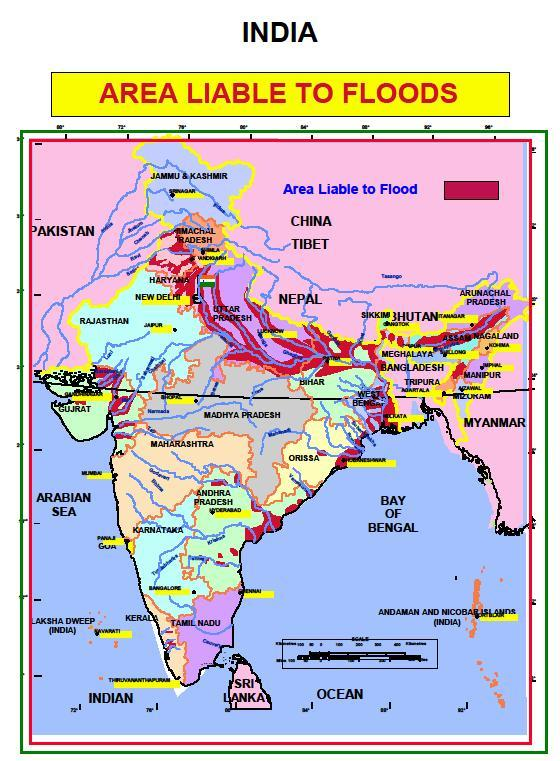

FLOODS

Floods are the most frequent type of natural disaster and occur when an overflow of water submerges land that is usually dry. Floods are often caused by heavy rainfall, rapid snowmelt or a storm surge from a tropical cyclone or tsunami in coastal areas.
There are 3 common types of floods:
Flash floods are caused by rapid and excessive rainfall that raises water heights quickly, and rivers, streams, channels or roads may be overtaken.
River floods are caused when consistent rain or snow melt forces a river to exceed capacity.
Coastal floods are caused by storm surges associated with tropical cyclones and tsunami.
At the Earth's surface, earthquakes manifest themselves by shaking and displacing or disrupting the ground. When the epicenter of a large earthquake is located offshore, the seabed may be displaced sufficiently to cause a tsunami. Earthquakes can also trigger landslides, and occasionally volcanic activity.
Floods in India

India is highly vulnerable to floods. Out of the total geographical area of 329 million hectares (mha), more than 40 mha is flood prone. Floods are a recurrent phenomenon, which cause huge loss of lives and damage to livelihood systems, property, infrastructure and public utilities. It is a cause for concern that flood related damages show an increasing trend. The average annual flood damage in the last 10 years period from 1996 to 2005 was Rs. 4745 crore as compared to Rs. 1805 crore, the corresponding average for the previous 53 years. This can be attributed to many reasons including a steep increase in population, rapid urbanization growing developmental and economic activities in flood plains coupled with global warming.
An average every year, 75 lakh hectares of land is affected, 1600 lives are lost and the damage caused to crops, houses and public utilities is Rs.1805 crores due to floods. The maximum number of lives (11,316) was lost in the year 1977. The frequency of major floods is more than once in five years.
Floods have also occurred in areas, which were earlier not considered flood prone. An effort has been made in these Guidelines to cover the entire gamut of Flood Management. Eighty per cent of the precipitation takes place in the monsoon months from June to September. The rivers a bring heavy sediment load from catchments. These, coupled with inadequate carrying capacity of rivers are responsible for causing floods, drainage congestion and erosion of river-banks.
Cyclones, cyclonic circulations and cloud bursts cause flash floods and lead to huge losses. It is a fact that some of the rivers causing damage in India originate in neighboring countries; adding another complex dimension to the problem. Continuing and large-scale loss of lives and damage to public and private property due to floods indicate that we are still to develop an effective response to floods. NDMA's Executive Summary Guidelines have been prepared to enable the various implementing and stakeholder agencies to effectively address the critical areas for minimising flood damage.